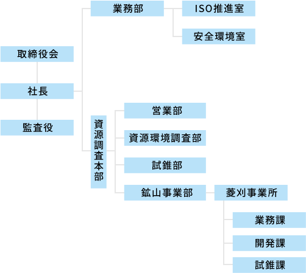
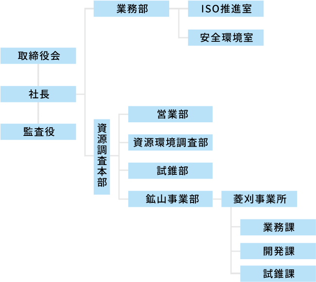

-
会社名住鉱資源開発株式会社
Sumiko Resources Exploration & Development Co.,Ltd. -
本社所在地東京都港区虎ノ門3丁目8番21号虎ノ門33森ビル5F
-
設立昭和38年8月1日
-
資本金8千万円
-
代表者岡田 和也 工学博士/技術士
-
株主
-
役員一覧
代表取締役社長 岡田 和也 工学博士/技術士 取締役 千葉 昭彦 技術士 取締役 藤澤 正憲 取締役 鈴木 克典 監査役 徳重 博昭 -
従業員数101名
-
取引銀行三井住友銀行
三菱東京ＵＦＪ銀行 -
許可・登録
地質調査業者登録 国土交通省大臣登録 質24第146号 測量業者登録 国土交通省大臣登録第（14）－741号 建設業許可 国土交通省大臣許可（特-27）第4335号 土木工事業 とび・土工工事業 さく井工事業 建設コンサルタント登録 国土交通省大臣登録 第建25第10019号 地質部門 土質及び基礎部門
沿 革
-
昭和38年8月「住鉱コンサルタント株式会社」設立
鉱山技術部門と土木部門の保有技術を土台に、総合コンサルタントを目指す。
初代社長に岩澤武雄氏就任。在籍者7名で業務を開始する。 -
昭和61年9月事業規模拡大に伴う人員増化のため、本社を新宿区に移転する。
-
平成13年8月本社を新宿区から台東区池之端に移転する。
-
平成14年4月住鉱開発工事株式会社の菱刈関連事業を引き継ぐ。
-
平成22年10月会社分割により、建設コンサルタント事業を（株）地圏総合コンサルタントに承継する。
-
平成22年11月社名を「住鉱資源関発株式会社」に変更する。
-
平成25年5月本社を台東区池之端から港区虎ノ門に移転する。
-
平成25年8月会社設立50年を迎える。
組織図

